注意力机制 Non-local Neural Networks
注意力机制的文献，arXiv:1711.07971v3
FaceBook Research
Abstract
论文提出了一种非局部操作（non-local operations）来捕获长范围的依赖性。非局部操作将某一位置的响应计算为所有位置特征的加权和。
non-local 模型在 Kinetics 和 Charades 数据集取得了很好的成绩（compete or outperform current competition winners）。
1. Introduction
对于序列数据，递归操作（recurrent operations）是长程依赖性建模的主流解决方案。对于图像数据，长距离的依赖性是由卷积运算深度堆叠形成的大感受野来建模的。
卷积运算和递归运算都是在空间或时间上处理局部邻域。因此，只有当这些操作被反复应用，在数据中逐步传播信号时，才能捕捉到长程依赖性。反复应用这些局部操作存在如下的局限性。
（1）计算效率低
（2）优化困难
（3）当消息需要长距离的来回传递时，这种依赖性建模变得困难
本篇论文提出的 non-local operation，用于捕捉深度神经网络的长范围依赖性，这个操作是一个高效、简单、通用的组件。非局域操作是计算机视觉中经典的非局域平均操作（non-local mean operation）的泛化。
- 非局域操作将某一位置的响应计算为所有位置的特征的加权和。位置可以是空间、时间或时空，适用于图像、序列和视频问题。
Figure 1：一个位置 $x_i$ 的响应是由所有位置 $x_j$ 的特征的加权平均值计算出来的。
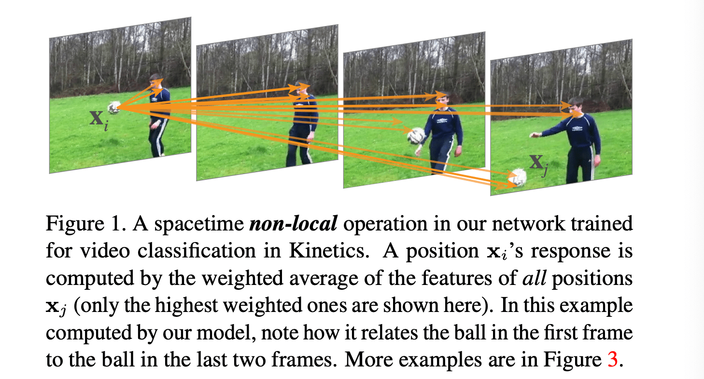
非局部操作的优点：
（1）通过计算任意两个位置之间的相互作用，直接捕捉长程依赖性，而不管它们的位置距离如何；
（2）高效，即使网络只有几层也能取得很好的效果；
（3）非局域运算保持了可变的输入大小，并且可以很容易地与其他运算相结合。
2. Related Work
- Non-local image processing.
- Graphical models.
- Feedforward modeling for sequences.
- Self-attention.
- Interaction networks.
- Video classification architectures.:
3. Non-local Neural Networks
3.1. Formulation
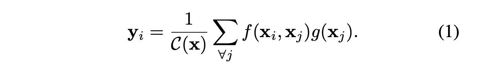
- i是一个输出位置（在空间、时间或时空）的索引
- j 是列举所有可能位置的索引
- x 是输入信号（图像、序列、视频；通常是它们的特征）
- y 是与 x 大小相同的输出信号
- 配对函数 f 计算 i 和所有 j 之间的关系，结果是一个标量
- 一元函数 g 计算输入信号在位置 j 的表示
- 响应由系数 C(x) 归一化。
3.2 Instantiations
（1）Gaussian
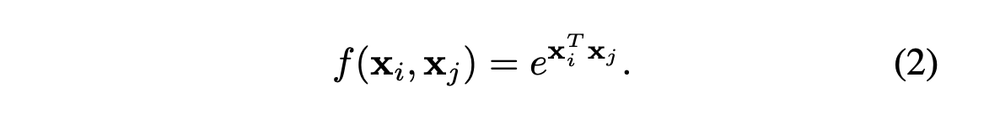
（2）Embedded Gaussian
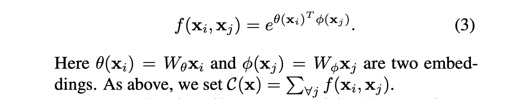
（3）Dot product.
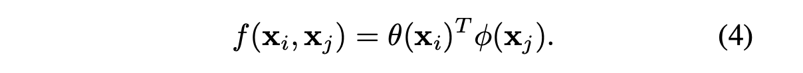
（4）Concatenation.
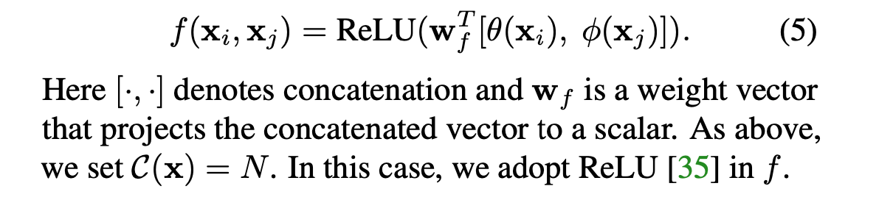
3.3. Non-local Block
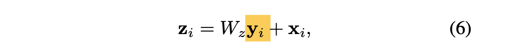
Figure 2 是一个 Non-local block 的例子。
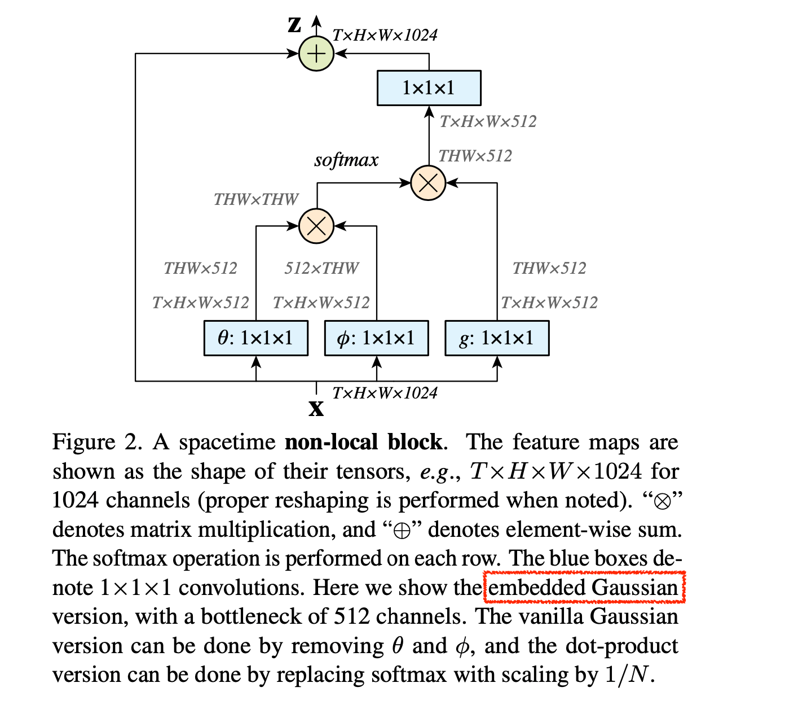
4. Video Classification Models
2D ConvNet baseline (C2D)
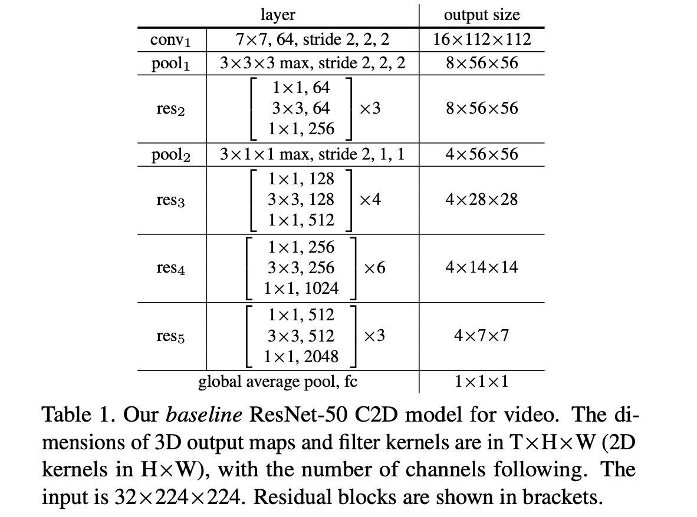
通过“膨胀”内核（“inflating” the kernels），将 Table 1 中的 C2D 模型变成一个 3D 卷积对应模型。
Inflated 3D ConvNet (I3D).
- one can turn the C2D model in Table 1 into a 3D convolutional counterpart by “inflating” the kernels.
Non-localnetwork.
- insert non-local blocks into C2D or I3D to turn them into non-local nets.
4.1. Implementation Details
-
Training.
-
Inference.
5. Experiments on Video Classification
Figure 1、Figure 3 直观地展示了 Non-local 模型计算的非本地块行为的几个例子。网络可以学习寻找有意义的关系线索，而不考虑空间和时间的距离。
- 箭头的起点表示 $x_i$，终点表示 $x_j$。每个 $xi$ 的 20 个最高权重的箭头被可视化。
- 输入的 Video 有 32 帧，以步幅为 8，取其中的 4 帧进行可视化显示模型如何找到相关线索来支持其预测。
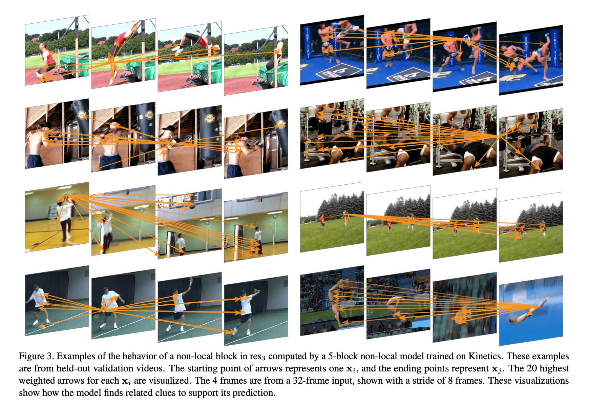
5.1. Experiments on Kinetics
- (a) Instantiations
- (b) Which stage to add non-local blocks?
- (c) Going deeper with non-local blocks.
- (d) Non-local in spacetime.
- (e) Non-localnetvs.3DConvNet.
- (f) Non-local 3D ConvNet.
- (g) Longer sequences.
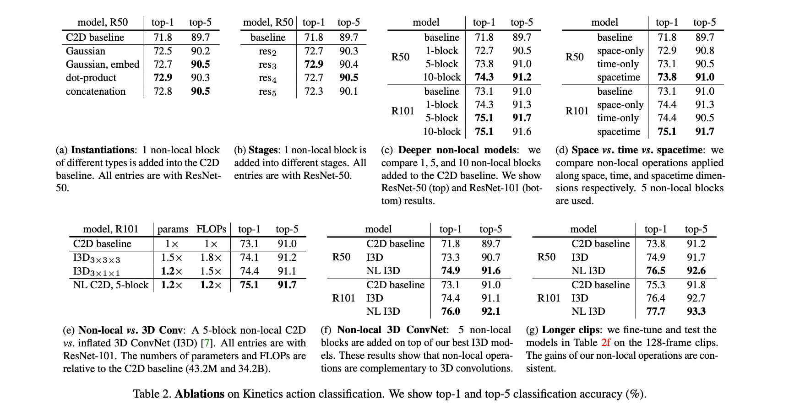
Figure 4 显示了 ResNet-50 C2D baseline 与带有 5 个块 Non-local C2D 的训练过程的曲线。
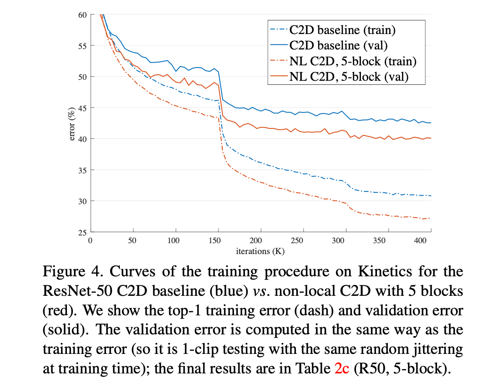
Comparisons with state-of-the-art results.
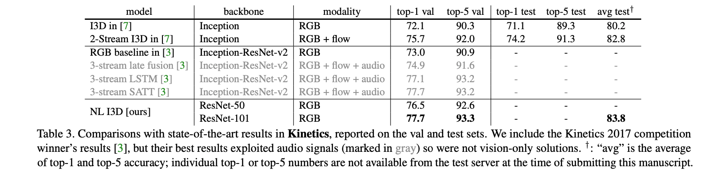
5.2. Experiments on Charades
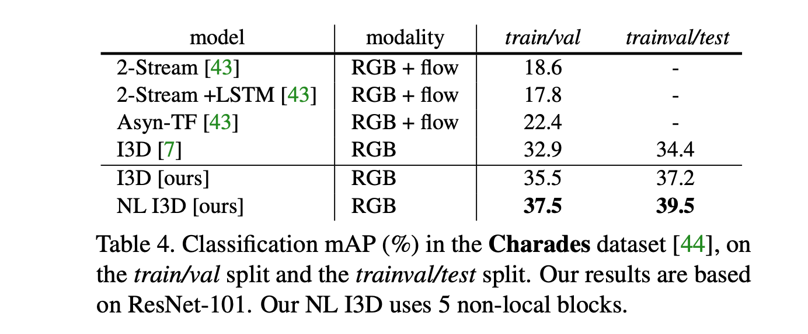
6. Extension: Experiments on COCO
COCO: object detection/segmentation and human pose estimation (keypoint detection).
(1) Object detection and instance segmentation.
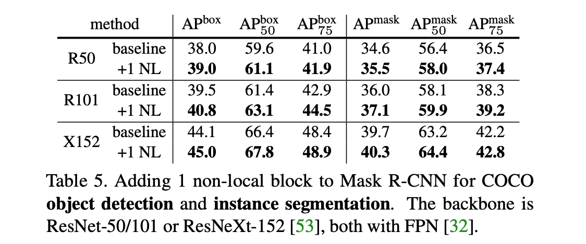
(2) keypoint detection.
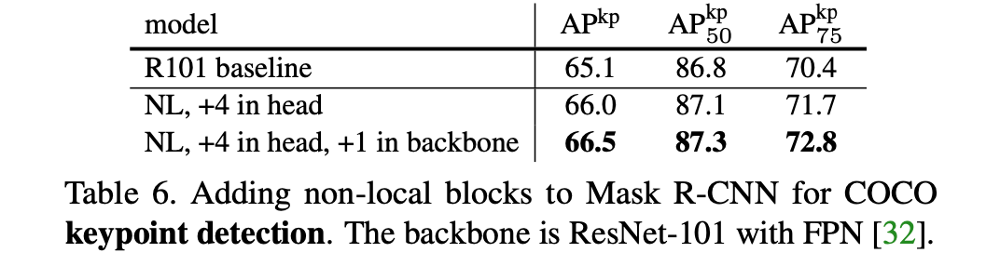
7. Conclusion
本篇论文提出了一类新的神经网络，它通过非局部操作来捕捉长程依赖性。
Non-local Block 可以与现有的网络架构相结合，non-local modeling 在 video classification, object detection and segmentation, and pose estimation 任务中具有重要的意义。
在如上所有的任务中，为 baseline 添加 Non-local Block 后，都能在 baseline 的基础之上提升模型性能。